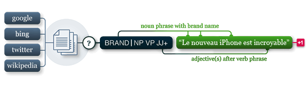

pattern.fr
The pattern.fr module contains a fast part-of-speech tagger for French (identifies nouns, adjectives, verbs, etc. in a sentence), sentiment analysis, and tools for French verb conjugation and noun singularization & pluralization.
It can be used by itself or with other pattern modules: web | db | en | search | vector | graph.

Documentation
The functions in this module take the same parameters and return the same values as their counterparts in pattern.en. Refer to the documentation there for more details.
Noun singularization & pluralization
For French nouns there is singularize() and pluralize(). The implementation uses a statistical approach with 93% accuracy for singularization and 92% for pluralization.
>>> from pattern.fr import singularize, pluralize
>>>
>>> print singularize('chats')
>>> print pluralize('chat')
chat
chats Verb conjugation
For French verbs there is conjugate(), lemma(), lexeme() and tenses(). The lexicon for verb conjugation contains about 1,750 common French verbs (constructed with Bob Salita's verb conjugation rules). For unknown verbs it will fall back to regular expressions with an accuracy of about 83%.
French verbs have more tenses than English verbs. In particular, the plural differs for each person, and there are additional forms for the FUTURE tense, the IMPERATIVE, CONDITIONAL and SUBJUNCTIVE mood and the PERFECTIVE aspect:
>>> from pattern.fr import conjugate
>>> from pattern.fr import INFINITIVE, PRESENT, PAST, SG, SUBJUNCTIVE, PERFECTIVE
>>>
>>> print conjugate('suis', INFINITIVE)
>>> print conjugate('suis', PRESENT, 1, SG, mood=SUBJUNCTIVE)
>>> print conjugate('suis', PAST, 3, SG)
>>> print conjugate('suis', PAST, 3, SG, aspect=PERFECTIVE)
être
sois
était
fut For PAST tense + PERFECTIVE aspect we can also use PRETERITE (passé simple). For PAST tense + IMPERFECTIVE aspect we can also use IMPERFECT (imparfait):
>>> from pattern.fr import conjugate
>>> from pattern.fr import IMPERFECT, PRETERITE
>>>
>>> print conjugate('suis', IMPERFECT, 3, SG)
>>> print conjugate('suis', PRETERITE, 3, SG)
était
fut The conjugate() function takes the following optional parameters:
| Tense | Person | Number | Mood | Aspect | Alias | Example |
| INFINITVE | None | None | None | None | "inf" | être |
| PRESENT | 1 | SG | INDICATIVE | IMPERFECTIVE | "1sg" | je suis |
| PRESENT | 2 | SG | INDICATIVE | IMPERFECTIVE | "2sg" | tu es |
| PRESENT | 3 | SG | INDICATIVE | IMPERFECTIVE | "3sg" | il est |
| PRESENT | 1 | PL | INDICATIVE | IMPERFECTIVE | "1pl" | nous sommes |
| PRESENT | 2 | PL | INDICATIVE | IMPERFECTIVE | "2pl" | vous êtes |
| PRESENT | 3 | PL | INDICATIVE | IMPERFECTIVE | "3pl" | ils sont |
| PRESENT | None | None | INDICATIVE | PROGRESSIVE | "part" | étant |
| PRESENT | 2 | SG | IMPERATIVE | IMPERFECTIVE | "2sg!" | sois |
| PRESENT | 1 | PL | IMPERATIVE | IMPERFECTIVE | "1pl!" | soyons |
| PRESENT | 2 | PL | IMPERATIVE | IMPERFECTIVE | "2pl!" | soyez |
| PRESENT | 1 | SG | CONDITIONAL | IMPERFECTIVE | "1sg->" | je serais |
| PRESENT | 2 | SG | CONDITIONAL | IMPERFECTIVE | "2sg->" | tu serais |
| PRESENT | 3 | SG | CONDITIONAL | IMPERFECTIVE | "3sg->" | il serait |
| PRESENT | 1 | PL | CONDITIONAL | IMPERFECTIVE | "1pl->" | nous serions |
| PRESENT | 2 | PL | CONDITIONAL | IMPERFECTIVE | "2pl->" | vous seriez |
| PRESENT | 3 | PL | CONDITIONAL | IMPERFECTIVE | "3pl->" | ils seraient |
| PRESENT | 1 | SG | SUBJUNCTIVE | IMPERFECTIVE | "1sg?" | je sois |
| PRESENT | 2 | SG | SUBJUNCTIVE | IMPERFECTIVE | "2sg?" | tu sois |
| PRESENT | 3 | SG | SUBJUNCTIVE | IMPERFECTIVE | "3sg?" | il soit |
| PRESENT | 1 | PL | SUBJUNCTIVE | IMPERFECTIVE | "1pl?" | nous soyons |
| PRESENT | 2 | PL | SUBJUNCTIVE | IMPERFECTIVE | "2pl?" | vous soyez |
| PRESENT | 3 | PL | SUBJUNCTIVE | IMPERFECTIVE | "3pl?" | ils soient |
| PAST | 1 | SG | INDICATIVE | IMPERFECTIVE | "1sgp" | j' étais |
| PAST | 2 | SG | INDICATIVE | IMPERFECTIVE | "2sgp" | tu étais |
| PAST | 3 | SG | INDICATIVE | IMPERFECTIVE | "3sgp" | il était |
| PAST | 1 | PL | INDICATIVE | IMPERFECTIVE | "1ppl" | nous étions |
| PAST | 2 | PL | INDICATIVE | IMPERFECTIVE | "2ppl" | vous étiez |
| PAST | 3 | PL | INDICATIVE | IMPERFECTIVE | "3ppl" | ils étaient |
| PAST | None | None | INDICATIVE | PROGRESSIVE | "ppart" | été |
| PAST | 1 | SG | INDICATIVE | PERFECTIVE | "1sgp+" | je fus |
| PAST | 2 | SG | INDICATIVE | PERFECTIVE | "2sgp+" | tu fus |
| PAST | 3 | SG | INDICATIVE | PERFECTIVE | "3sgp+" | il fut |
| PAST | 1 | PL | INDICATIVE | PERFECTIVE | "1ppl+" | nous fûmes |
| PAST | 2 | PL | INDICATIVE | PERFECTIVE | "2ppl+" | vous fûtes |
| PAST | 3 | PL | INDICATIVE | PERFECTIVE | "3ppl+" | ils furent |
| PAST | 1 | SG | SUBJUNCTIVE | IMPERFECTIVE | "1sgp?" | je fusse |
| PAST | 2 | SG | SUBJUNCTIVE | IMPERFECTIVE | "2sgp?" | tu fusses |
| PAST | 3 | SG | SUBJUNCTIVE | IMPERFECTIVE | "3sgp?" | il fût |
| PAST | 1 | PL | SUBJUNCTIVE | IMPERFECTIVE | "1ppl?" | nous fussions |
| PAST | 2 | PL | SUBJUNCTIVE | IMPERFECTIVE | "2ppl?" | vous fussiez |
| PAST | 3 | PL | SUBJUNCTIVE | IMPERFECTIVE | "3ppl?" | ils fussent |
| FUTURE | 1 | SG | INDICATIVE | IMPERFECTIVE | "1sgf" | je serai |
| FUTURE | 2 | SG | INDICATIVE | IMPERFECTIVE | "2sgf" | tu seras |
| FUTURE | 3 | SG | INDICATIVE | IMPERFECTIVE | "3sgf" | il sera |
| FUTURE | 1 | PL | INDICATIVE | IMPERFECTIVE | "1plf" | nous serons |
| FUTURE | 2 | PL | INDICATIVE | IMPERFECTIVE | "2plf" | vous serez |
| FUTURE | 3 | PL | INDICATIVE | IMPERFECTIVE | "3plf" | ils seron |
Instead of optional parameters, a single short alias, or PARTICIPLE or PAST+PARTICIPLE can also be given. With no parameters, the infinitive form of the verb is returned.
Reference: Salita, B. (2011). French Verb Conjugation Rules. Retrieved from: http://fvcr.sourceforge.net.
Attributive & predicative adjectives
French adjectives inflect with an -e, -s or -es suffix depending on gender. There are many irregular cases (e.g., curieux → une fille curieuse). You can get the base form with the predicative() function. A statistical approach is used with an accuracy of 95%.
>>> from pattern.fr import predicative
>>> print predicative('curieuse')
curieux Sentiment analysis
For opinion mining there is sentiment(), which returns a (polarity, subjectivity)-tuple, based on a lexicon of adjectives. Polarity is a value between -1.0 and +1.0, subjectivity between 0.0 and 1.0. The accuracy is around 74% (P 0.77, R 0.73) for book reviews:
>>> from pattern.fr import sentiment
>>> print sentiment('Un livre magnifique!')
(1.0, 1.0) Parser
For parsing there is parse(), parsetree() and split(). The parse() function annotates words in the given string with their part-of-speech tags (e.g., NN for nouns and VB for verbs). The parsetree() function takes a string and returns a tree of nested objects (Text → Sentence → Chunk → Word). The split() function takes the output of parse() and returns a Text. See the pattern.en documentation (here) how to manipulate Text objects.
>>> from pattern.fr import parse, split
>>>
>>> s = parse(u"Le chat noir s'était assis sur le tapis.")
>>> for sentence in split(s):
>>> print sentence
Sentence('Le/DT/B-NP/O chat/NN/I-NP/O noir/JJ/I-NP/O'
"s'/PRP/B-NP/O était/VB/B-VP/O assis/VBN/I-VP/O"
'sur/IN/B-PP/B-PNP le/DT/B-NP/I-PNP tapis/NN/I-NP/I-PNP ././O/O')
The parser is based on Lefff. For words in Lefff that can have multiple part-of-speech tags, we used Lexique to find the most frequent POS-tag.
References:
Sagot, B. (2010). The Lefff, a freely available and large-coverage morphological and syntantic lexicon for French. Proceedings of LREC'10.
New, B., Pallier, C., Ferrand, L. & Matos, R. (2001). A lexical database for contemporary french: LEXIQUE. L'année Psychologique.